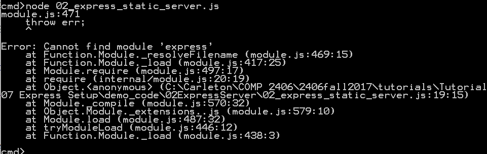
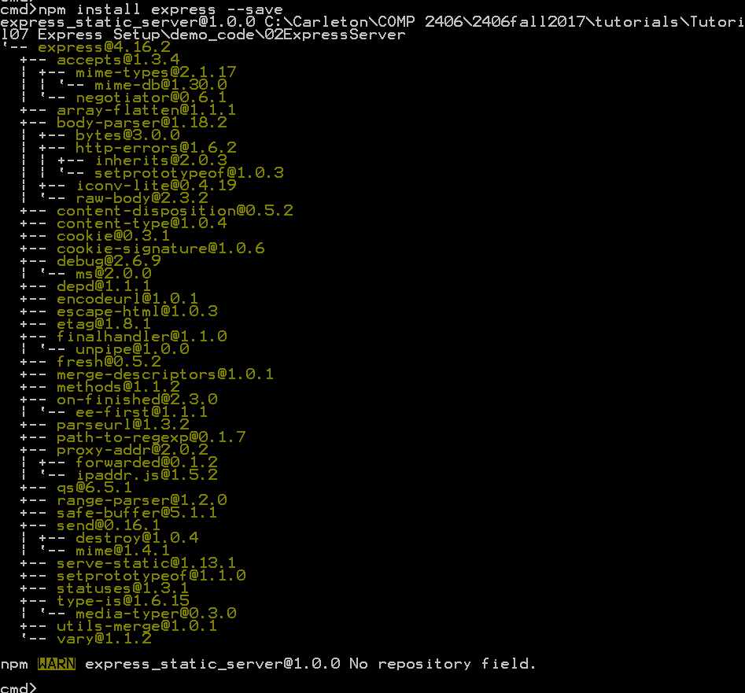
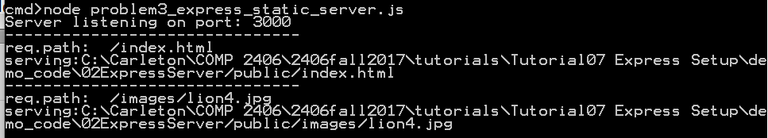
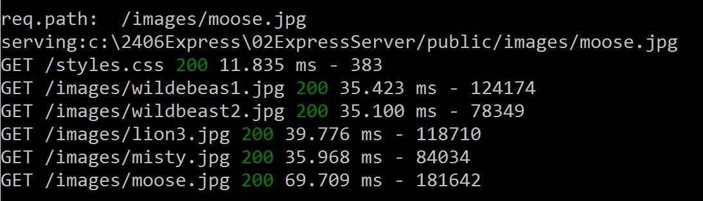
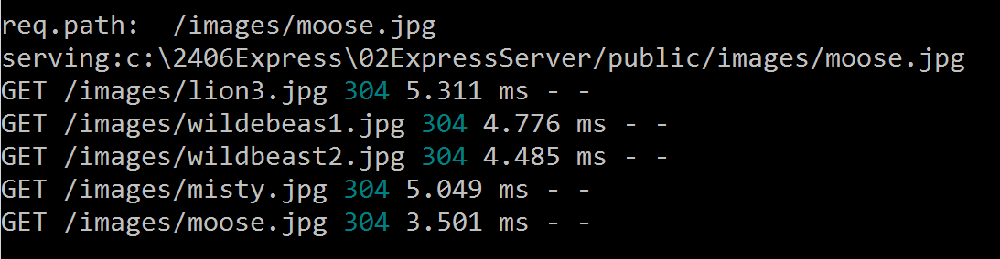
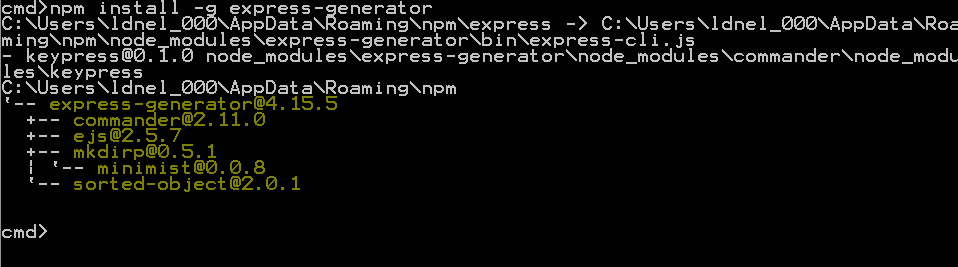
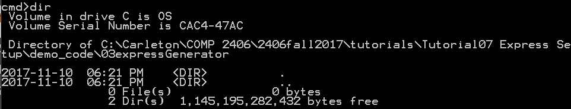
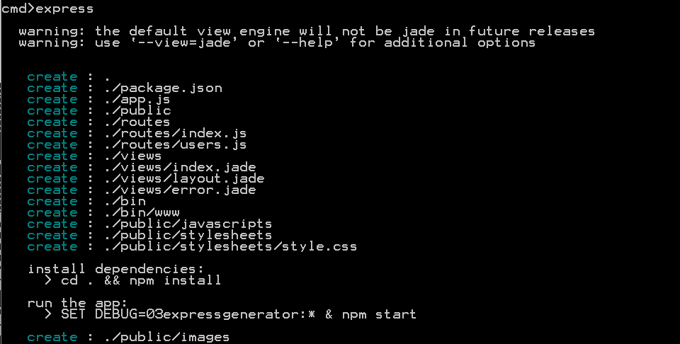
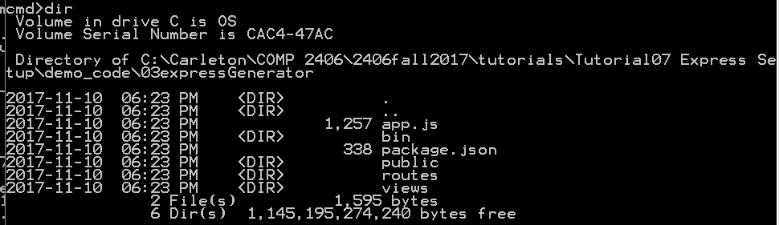
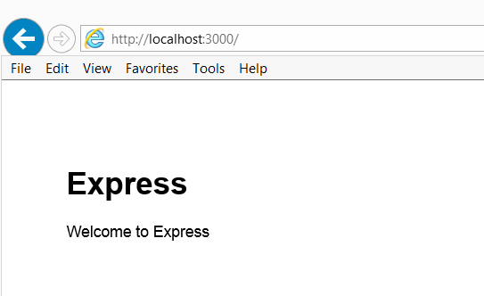

COMP 2406 - Fall 2017 Tutorial #7
Introducing Express Middleware
© L.D. Nel 2017
Revisions
revisions will be noted here.
Description:
The purpose of this tutorial is to get you started with Express, Express Middleware and make you aware of the Express Generator utility for building a default "Hello World" express-based app. We will build a simple static server using three aproaches:
1) Using Node.js to read files from a choosen directory -just to review.
2) Using the npm module express and adding functionallity we need.
3) Use the npm global module express-generator to generate the framework app that could be used as the starting point for express.js apps.
IMPORTANT: This tutorial is meant as a homework assignment and for you to demonstrate your results at your tutorial session. You will not be able to complete it if you only start when you come to the tutorial. You will need to read about and learn those aspects of javascript that pertain to this tutorial on your own and come up with a strategy to solve the problems.
To get credit for the tutorial you must complete, or make significant progress on, the exercise problems provided and demonstrate your results to the tutorial TA before you leave the tutorial.
Instructions:
Problem 1) Static Server with Node.js Review
Open the directory 01NodeSever found in the demo code. Run the simple static server by executing
node 01_static_node_server.js
and then visit the following addresses with your browser:
http://localhost:3000/greeting.html
http://localhost:3000/index.html
http://localhost:3000/table.html
http://localhost:3000/table_css_internal.html
http://localhost:3000/table_css_external.html
These are all files found in the public subdirectory of the 01NodeServer directory.
For table_css_internal.html you should see a table that looks like the following:
Open the 01_static_node_server.js file and review the structure of the code. We will use this as a basis of comparision to Express.js servers created moving forward. This code should be very familiar to you by now.
Problem 2)
For problem 2 we are going to use the npm express module to build a simple static server from scratch. We will also learn about setting up your initial package.json file.
Open the directory 02ExpressServer found in the demo code.
Try and run the server by executing:
node 02_express_static_server.js
You should get an error like the following:

The problem is that the express module has not yet been loaded. You could install the module with the command npm install express but instead we want to install it using a package.json file. We will start by using npm to help us generate a starting package.json file.
To generate a starting package.json file execute:
>npm init
You will be asked several questions to fill some of the attributes. Do this and answer the questions as shown on the screen capture below.
At this point you should have a package.json file that looks something like the following:
{
"name": "express_static_server",
"version": "1.0.0",
"description": "a simple static server built with express.js",
"main": "02_express_static_server.js",
"scripts": {
"test": "node 02_express_static_server.js"
},
"author": "L.D. Nel",
"license": "ISC"
}
To learn more about how npm interprets the attributes in the package.json file see: https://docs.npmjs.com/files/package.json. You can try an run the server now by executing either:
npm test
or
node 02_express_static_server.js
Again when you try and run the server you will get an error message about the missing express module.
Install the express module by executing:
npm install express --save
(The --save option causes the dependency to be written into your package.json file.)
The console output for the install should be something like the following:

Your package.json file should now look like the following. Notice a dependency has been added with the version number of the express module that was installed:
{
"name": "express_static_server",
"version": "1.0.0",
"description": "a simple static server built with express.js",
"main": "02_express_static_server.js",
"scripts": {
"test": "node 02ExressServer.js"
},
"author": "L.D. Nel",
"license": "ISC",
"dependencies": {
"express": "^4.16.2"
}
}
Also notice that your directory now contains a node_modules folder that contains all the modules installed. (Express and all the modules it depends on).
Now that we have the correct express dependency in our package.json file we can use this file in the future to install the required modules. To test this do the following:
1) Delete the node_modules directory completely.
2) Execute npm install
npm install will install all the modules in the dependencies section of your package.json file (and create the node_modules directory if necessary).
When the server launches test it with the following:
http://localhost:3000/index.html
You should see the familiar web site but no console output on the server console. Next try:
http://localhost:3000/Louis.html
This requested static file does not exist in our public directory on the server. You will notice the server code is writing some console output and the browser received a 404 status response (indicating the file was not available.) We will examine, and modify, this behaviour in the next question.
Problem 3)
Open the express server code provided in file 02_express_static_server.js it should look like the following.
const express = require('express');
const app = express();
const PORT = process.env.PORT || 3000
const ROOT_DIR = '/public'; //root directory for our static pages
//Middleware
app.use(express.static(__dirname + ROOT_DIR)); //provide static server
//Routes
//catch all requests an log them using app.all route
app.all('*', function(req, res, next){
console.log('-------------------------------');
console.log('req.path: ', req.path);
console.log('serving:' + __dirname + ROOT_DIR + req.path);
next(); //allow next route or middleware to run
});
//start server
app.listen(PORT, err => {
if(err) console.log(err)
else {console.log(`Server listening on port: ${PORT}`)}
})
Notice the .use middleware that implements a static server. It is just one line of code in the express application. Also we are catching all the routes not handled by the static server and printing, or logging, some request information for files that don't exist. Finally there appears to be no code that sends the 404 message back to the client. This is default behaviour of the express-based server.
For this problem we want to write our own middleware function to do the logging to the console on every request.
A middleware function typically looks like the following:
function(req, res, next){
//do some stuff
next(); //allow next middleware to run
}
The middleware function usually calls next() as its last statement to allow the next attached middleware to run. A middleware function could end the chain by sending a response to the client and not calling next() as well but here we want to call next() because we are just logging information and don't want to interupt the normal flow and routing of the client request.
Remove the app.all route code and replace it with the following middleware instead. Middleware is attached to the app using the .use method of the app object. The order is very important -it needs to go before the static server middleware because it needs to run before that. Middleware will be executed in the order of the .use statements.
Your server should now look like the following:
const express = require('express');
const app = express();
const PORT = process.env.PORT || 3000
const ROOT_DIR = '/public'; //root directory for our static pages
//Middleware
app.use(function(req, res, next){
console.log('-------------------------------');
console.log('req.path: ', req.path);
console.log('serving:' + __dirname + ROOT_DIR + req.path);
next(); //allow next route or middleware to run
});
app.use(express.static(__dirname + ROOT_DIR)); //provide static server
//Routes
//start server
app.listen(PORT, err => {
if(err) console.log(err)
else {console.log(`Server listening on port: ${PORT}`)}
})
Execute your new server and verify that the server console output appears for every request -even the requests for files served from the public directory by the static server middleware:

Problem 3)
One of the most popular logging modules is an npm module called morgan.
For this problem we want you to add the morgan logger to the express server as middleware. Here are the steps:
1) Install the morgan logger such that it updates the package.json file as well:
npm intall morgan --save
Your package.json file should now look like the following:
{
"name": "express_static_server",
"version": "1.0.0",
"description": "a simple static server built with express.js",
"main": "02_express_static_server.js",
"scripts": {
"test": "node 02_express_static_server.js"
},
"author": "L.D. Nel",
"license": "ISC",
"dependencies": {
"express": "^4.16.2",
"morgan": "^1.9.0"
}
}
2) Modify the server to require morgan as well:
const logger = require('morgan'); //request logger
3) Add the logger as middleware to your server:
//use morgan logger to keep request log files
app.use( logger('dev'));
Now re-run the server. You should see the morgan logger writing output the console: (It will be interleaved with our own logger if you still have that active.)

The first time you load a file you should see the "200" success code. If you reload a file you will most likely see the "304" code as shown below. What does that mean?

The morgan logger can be used to write logs to a file instead of the console. To learn more about the morgan logger visit: https://www.npmjs.com/package/morgan
Congratulations you are now well underway to writing your own middleware and using middleware available on the npm web site.
Problem 4)
You can also "auto-magically" generate a complete default express app using the express-generator module. Here we will outline the install instructions.
To install the express app generator we do a global install (as indicated below by the -g option). Global installs are meant for things like command line tools. The express module for running your servers should not be installed with a global install -that should always end up in a local node_modules directory.
To install the the express-generator open a command window and execute:
npm install -g express-generator
The -g option is important and will cause the express generator tool to be loaded "globally" at the same location as where your nodejs and npm applications are installed. If you don't use the -g option you are likely to get an error. On my machine I see the following as the result of executing the above command:

(NOTE: For Max OS X and Linux users, if there is an error installing globally, most likely your system
requires root/ administrator rights to write to the folder. In this case, $ sudo npm install -g express-generator might be needed.)
To verify that express-generator is installed execute:
express --version
You should see the output something like: 4.15.5
Now create a directory for this problem called 03ExpressGenerator, open a command window on that directory. The directory should be empty at this point:

Now generate the default framework app by executing:
express
Here is the output:

Observe that some files have been added to the directory:

This time the package.json file looks like the following:
{
"name": "03expressgenerator",
"version": "0.0.0",
"private": true,
"scripts": {
"start": "node ./bin/www"
},
"dependencies": {
"body-parser": "~1.18.2",
"cookie-parser": "~1.4.3",
"debug": "~2.6.9",
"express": "~4.15.5",
"jade": "~1.11.0",
"morgan": "~1.9.0",
"serve-favicon": "~2.4.5"
}
}
To install the modules for this default app execute: (you will notice a node_modules directory gets created):
npm install
To run the app execute:
npm start
or alternatively
node ./bin/www
Once the server is running you can use your browser to visit http://localhost:3000 and you should see:

Congratulations you have a scaffold express app running.
When you have completed these exercises show your results to the TA's to get credit for the tutorial.
Optional)
This express app is already set up to serve static pages. It has a public directory already built. You should now be able to put in there the same files that were being served in the previous questions. Note this public directory has some subdirectories for images, javascript, and css style sheets. So play around with placing your files in the appropriate places until you have this app serving the same static files as in the other two questions and correctly finding the images and css styles.